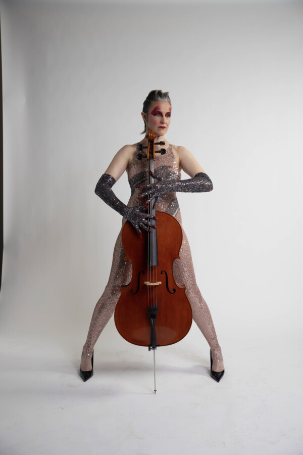

Bionic Synthmap
Join the Chicago Symphony Orchestra Overture Council in a first-of-its-kind opportunity to interact with — and be part of the music — right on stage. In this Soundpost event, the Overture Council’s event series that explores the ever-evolving medium of music, CSO cellist Katinka Kleijn will showcase her immersive sound installation, Bionic Synthmap, playing both cello and synthesizer, accompanied by projected visuals.
Bionic Synthmap is a site-specific audiovisual sound sculpture that explores shared circuits between human bodies and synthesizers. An interactive installation, it considers connectivity, perceptual experience and psychophysics.
Much of Kleijn’s work illuminates the cello’s anthropomorphic qualities, often by placing the instrument in thought-provoking new contexts. This marks Kleijn’s first improvisational performance at the Symphony Center in her three decades with the orchestra.
Following the performance, guests are invited to explore Orchestra Hall in an entirely new way. Attendees will have the opportunity to interact directly with the Synthmap and freely experience the historic venue in a fluid, nontraditional format that blurs the line between audience and performer.